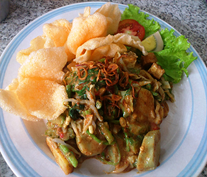

Bahan:
- 175 gr Daun Bayam
- 150 gr Kubis yang diiris kecil
- 200 gr Kacang panjang diiris kecil
- 1 buah Rebusan telur
- 200 gr Mentimun diiris kecil
- 175 gr Tauge
- 300 gr Tahu kuning (digoreng terlebih dahulu)
- Bawang goreng secukupnya
- 300 gr Kentang yang direbus dahulu
- Emping dan kerupuk
Bumbu Saus Kacang:
- 750 ml Air putih
- 175 gr Kacang tanah (dihaluskan)
- 2 sendok teh Garam
- 4 sendok teh gula merah
- 4 buah Cabe rawit
- 4 buah Cabe merah
- 175 gr kacang kenari (dihaluskan)
- 1 sendok teh Terasi (bakar dahulu)
- 1 1/2 sendok makan Air Asem jawa
Cara Membuat:
- Awali dengan merebus semua sayuran sampai layu lalu dinginkan dan sisihkan sejenak.
- Selanjutnya haluskan kacang tanah, cabe rawit, kacang kenari, cabe merah terus bubuhi dengan Garam secukupnya.
- Lalu tambahkan air putih, gula merah yang sudah dihaluskan, air asam, dan kecap manis aduk hingga rata.
- Rebus semua bumbu sampai mendidih lalu tiriskan.
- Siapkan piring saji, lalu tuangkan sayur-sayuran yang sudah direbus.
- Kemudian lumuri dengan bumbu kacang dan tambahkan telur rebus yang dibelah dua sebagai pelengkap.